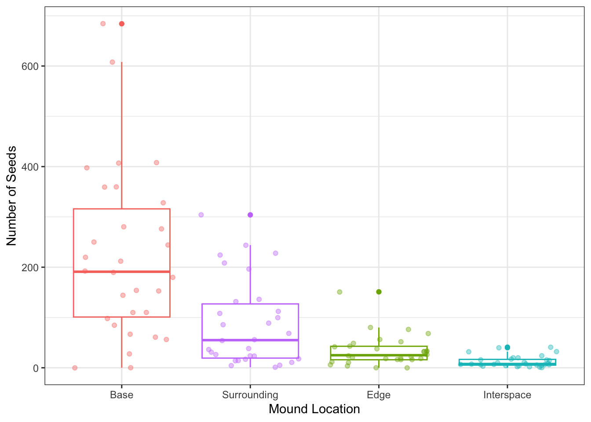
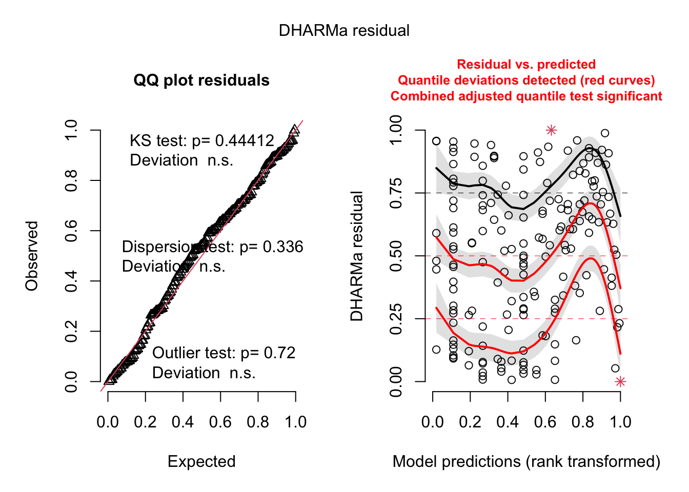
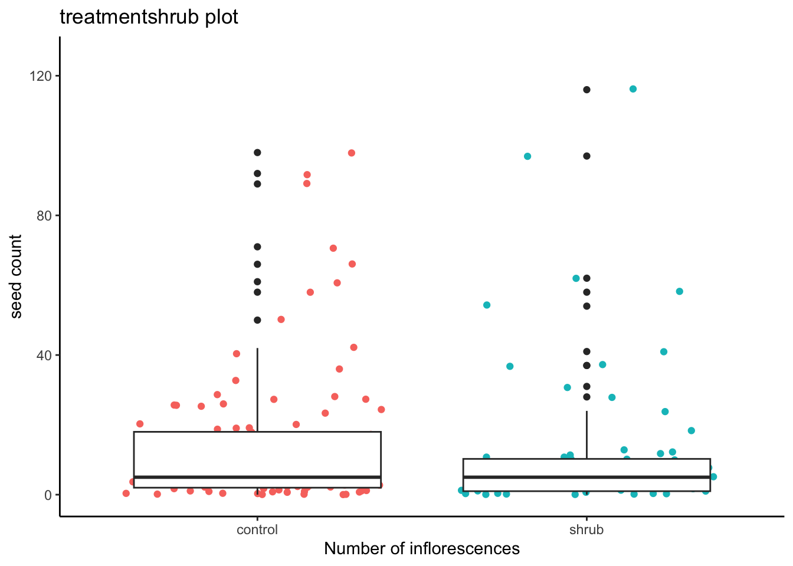

knitr::opts_chunk$set(echo = TRUE, message = FALSE, warning = FALSE)Final Project Code
Notes [DELETE LATER]
Problem #1: How does total seed number differ between kangaroo rat mound locations?
Summary of context article (The Composition of seed banks) Rat mound creates micro-environments that can effect seed banks or number of seeds, studies tend to show that there are more seeds around mounds
- probably do a single linear regression like in homework 4? Have to use Kruskel test instead of ANOVA because data is non-normal
Data Dictionary:
mnd: kangaroo rat mound (location)
dir: direction from center of the mound
loc: microhabitat (B = base, S = surrounding, E = edge, I = interspace)
species: four letter code for target taxa
seeds: seed counts for species and percent cover for physical variables
Problem #2: How does seed count vary with plot type (shrub or open), plant species, and total number of inflorescences? Is there a simpler model that explains seed count, and if so, what is it?
- probably do a multiple linear regression like in homework 5? –actually we CAN”T because the data is not normal
Summary: Because of climate change “shrubfication is happening in the tundra, where more shrubs are growing in the tundra, which would effect the ecosystem there. On average, there are more flowers in open plots vs shrub plots. Shrub plots are plots that have undergone shrubfication. Open plots have not experienced shrubfication yet.
Data Table/Dictionary
pollinator: observations of pollinators visiting plots
shrub_num: shrub ID
treatment: open or shrub plot
pollinator_ID: what type of pollinator
cloud_cover: “rough % cloud cover” - whatever that means
wind: wind speed (mph) - probably because it affects pollinators
seed_ctwt
species_ID: what plant
plant_nr: plant number, what number 1-5 plant was assigned to
total_nr_infl: total number of inflorescenses
nr_infl_coll: number of inforesecenses collected
nr_seeds: seed numbers
wt_seeds_mg: seed weights
individual_flower
community_flower
Siting data:
problem one data: (T. Koontz and Simpson 2013)
problem one context: (T. L. Koontz and Simpson 2010)
problem two data: (Seaver 2022)
Introduction
Kangaroo rats build mounds that create micro-environments and foster more plant diversity than adjacent grassland (Guo 1996). Even within the same mound, there are different microhabitats depending on distance away from the mound (T. L. Koontz and Simpson 2010). Using data from “Effects of Kangaroo Rat Mounds,” our study investigates how total seed number differs between kangaroo rat mound locations (base of the mound, surrounding areas, edge of mound, and interspace between mound and grassland) (T. Koontz and Simpson 2013). Our null hypothesis states that there is no difference in number of seeds between the different kangaroo rat mound locations. Our alternative hypothesis states that some locations of the mound support more seeds than others.
Set Up
library(here)
library(naniar)
library(tidyverse)
library(GGally)
library(tidyr)
library(corrplot)
library(skimr)
library(stringr)
library(effsize)
library(rstatix)
library(flextable)
library(performance)
library(base)#Load in Problem 1 data
kangaroo_rat <- here("data", "sev208_kratseedbank_20120213.txt") |> #File path
read.csv(header= TRUE, sep =",", quote = "") |> #Has header, delimiter is comma, no quoting
mutate(loc = str_replace_all(loc, c("B" = "Base", #Replace code names with actual names
"D" = "Surrounding",
"E" = "Edge",
"I" = "Interspace"))) |>
mutate(seeds = as.numeric(seeds)) #Make sure data is numericMethods Problem #1
The data was collected by…
The data was cleaned by…(Figure 1) no missing data
An exploratory data visualization was creating plotting the number of seeds at each of the four mound locations (Figure 2). At a glance, it appears that the closer the location to the mound, the more seeds tended to be observed there, however, many observations tended to cluster at zero.
To further investigate, the data was visually (Figure 3) and statistically checked for homoscedasticity and normality. According to the checks, the data was both heteroscedastic and non-normal.
Thus, a Kruskel-Wallis test was run. The Kruskel-Wallis test ……
The effect size indicates that the difference in seed counts between mound locations is significant but small.
#Missing data check
gg_miss_var(kangaroo_rat) #No data missing
Figure 1. Visualization of Missing Data in “kangaroo_rat” dataframe
The y-axis are the variables (columns in the dataframe and the x-axis marks how many rows have missing data per variable.
kangaroo_rat_subset <- kangaroo_rat |>
filter(!grepl("soil|gravel|dist|litter|plant", species)) |> #Filter out irrevelant columns (physical descriptors)
group_by(mnd, dir, loc) |> #Group to get total seeds per mound location
summarize(total_seeds = sum(seeds)) |>
ungroup()#Exploratory data visualization, looks like locations closet to mound have most seeds, but we should further explore
ggplot() +
geom_boxplot(data = kangaroo_rat_subset, aes(x = loc, y = total_seeds, color = loc)) +
geom_jitter(data = kangaroo_rat_subset, aes(x = loc, y = total_seeds, color = loc), alpha = 0.4) + #Create jitter plot of seed count observations
theme_bw() + #Set theme
theme(legend.position = "none") + #Omit legend
labs(x = "Mound Location", #Label axes
y = "Number of Seeds") +
scale_x_discrete(limits = c("Base", "Surrounding", "Edge", "Interspace")) #Reorder locations from closet to furthest
Figure 2. Exploratory Data Visualization of Seeds vs Mound Location
This figure plots observations of the number of seeds found at each mound location. The locations are in order from closet to furthest from the mound, from the base of the mound to the interspace adjacent to the grassland.
#Create model to further explore relationship
modelobject <- lm(total_seeds ~ loc, data = kangaroo_rat_subset)
#Visualize models - diagnostic plots in a grid
par(mfrow = c(2, 2))
plot(modelobject) #Data is not normal Figure 3. Diagnostic Plots for Kangaroo Rat Data
The Residual vs Fitted plot checks for constant variance (homoscedasticity) among the residuals. The Scale-Location plot also checks for homoscedasticity, but using the square root of the residuals; both plots show a change in pattern, where points decrease in density from bottom to top, suggesting heteroscedasticity. The Normal Q-Q plot suggests non-normality because of the deviation from the dotted line at the right tail end of the data. The Constant Leverage plot shows outliers in the data, but there do not appear to be any.
#Statistical checks
kr_model <- lm(total_seeds ~ loc, data = kangaroo_rat_subset)
check_normality(kr_model) #The data is not normalWarning: Non-normality of residuals detected (p < .001).check_heteroscedasticity(kr_model) #The data is heteroscedasticWarning: Heteroscedasticity (non-constant error variance) detected (p < .001).kruskal_results <- kruskal.test(total_seeds ~ loc, data = kangaroo_rat_subset) #p-value very small, evidence to reject the null, evidence that there is a difference in seed numbers among the mound locations
kruskal_results
Kruskal-Wallis rank sum test
data: total_seeds by loc
Kruskal-Wallis chi-squared = 54.269, df = 3, p-value = 9.83e-12#Post-hoc tests to see how and which ranks differ
rstatix::kruskal_effsize(total_seeds ~ loc, data = kangaroo_rat_subset, conf.level = 0.95) |>
flextable() |> #Make data frame into a flex table object
set_header_labels(.y. = "Dependent Variable", #Change header labels to be meaningful
n = "Number of Observations",
effsize = "Effect Size",
method = "Method",
magnitude = "Magnitude")Dependent Variable | Number of Observations | Effect Size | Method | Magnitude |
|---|---|---|---|---|
total_seeds | 120 | 0.4419777 | eta2[H] | large |
#Magnitude is very small, so the difference between seed number at different locations is significant but smallFigure 4. Effect Size of Kruskal Wallis Test
The table shows the results of calculating the effect size of the Kruskal Wallis Test.
Results Problem #1
- low p-value suggests evidence to reject null hypothesis, difference in medians among locations
Introduction Problem #2
The Niwot Ridge is an alpine ecosystem that consists of cold, snowy, and windy climates and low temperatures during the growing season (Edwards et al., 2007). Despite these conditions, many plants have adapted to this environment. Learning more about these plants can better inform us of plants that live in their climate limits (Germino, 2014). Seed count is the number of seeds produced by a plant that is commonly used to determine the plant’s fitness (Wen and Simmons, 2020). Plants have numerous biological and physical factors that can contribute to their seed count. Using data from “Individual and community flowering phenology, seed counts and pollinator visitation rates in shrub and open plots across Niwot Ridge, 2019 - 2021”, we will investigate how the seed count of plants in the Niwot Ridge varies with total number of inflorescences, plant species, and plot type. We hypothesize that plant species and number of inflorescences will be the biggest factors in determining seed count.
Methods Problem #2
There were four datasets the study that they came from, but we only used one of them called seed count weight. We did this because seed count weight contained all of the variables that we were using to compare seed count such as total number of inflorescence, plant species, and plot type. Seaver counted the number of seeds by breaking up dried buds with her fingers and counting all the viable seeds. A seed was “viable” if it had a plump look and feel compared to an aborted seed that was clearly shriveled and small. The seeds were collected from five different species: Geuros, Kobmyo, Carrup, Arefen, and Minobt. Viable seeds were recorded and put into envelopes that had their respective species, plot number, and number of inflorescences collected (Seaver, 2022).
To get a better understanding of the dataset, we ran a series of tests and created visualizations that helped us understand the relationship between variables. As shown in figure 1, there are variables in the dataset that have missing data. However, the number of missing data is not too significant and we still have a large number of observations to work with. We still subsetted the data to drop the missing data. As shown in figure 2, we used the ggpairs function to create plots that we can use to visually assessed the relationships between variables. We found that the number of influoresences and seed count had a strong Pearson’s correlation, but there seemed to be no relationship between variables based on visual assessment of the scatter plot and bar graphs. As shown in figure 3, we calculated Pearson’s correlation to determine the relationships between numerical values of number of inflorescence and total seed count. We found that there was a strong correlation between number of inflorescnece and total seed count. The Pearson’s correlation was a 0.93 which is a considered a strong correlation.
In order for us to determine how seed count varies with plot type, plant species, and total number of inflorescences, we created three models that each had different methods for looking at how the variables effected one another in the model. As shown in figure 4, we visually assessed the normality and homoskestacitiy of residuals using a series of diagnostic plot for the models. We found that the visual assumption check of the plots show that the model do not conform to linearity or normality. Therefore, we did not use linear regression models because the models did not conform to the assumptions of linear regression. Instead, we used generalized linear models with a negative binomial distribution which is why we decided that the model seetctwt3 is the best and most simple model. This is because when we did a summary of the model we used shrub plot to compare against the control (open plot) and found that open plot had higher seed counts than shrub plot. This showed us that there was a still a pattern between these two variables.
Code #2
#Load in Problem 2 data
pollinator <- here("data", "shrubstudy_pollinator.ms.data.csv") |>
read.csv()
seed_ctwt <- here("data", "shrubstudy_seed_ctwt.ms.data.csv") |>
read.csv()
individual_flower <- here("data", "shrubstudy_individual_flower_counts.ms.data.csv") |>
read.csv()
community_flower <- here("data", "shrubstudy_community_flower_counts.ms.data.csv") |>
read.csv()gg_miss_var(seed_ctwt) #Most of dist_fr_shr, wt_seeds_mg, nr_seeds missingFigure 1.
colnames(seed_ctwt) [1] "date_collected" "shrub_num" "aspect" "tag_num"
[5] "treatment" "species" "plant_nr" "dist_fr_shr"
[9] "total_nr_infl" "nr_infl_coll" "nr_seeds" "wt_seeds_mg"
[13] "notes" library(dplyr)
seed_ctwt_subset <- dplyr::select(seed_ctwt,"treatment", "species", "total_nr_infl", "nr_seeds") %>%
drop_na(nr_seeds)#seed_ctwt_subset <- seed_ctwt |>
#select(c("treatment", "species", "total_nr_infl", "nr_seeds")) |> #Plot type, plant species, total number of inflorescences - select relevant columns
#drop_na(nr_seeds) #Thats a lot of data missing... should we do anything?
#Not quite sure what the total number of inflorescences vs inflorescence collected means#ggapairs plot for predictor variables
ggpairs(seed_ctwt_subset)
Figure 2.
#Calculate Pearson's r for numerical values only
seed_cor <- seed_ctwt_subset |>
dplyr::select(total_nr_infl:nr_seeds) |> #Not sure if this is correct
cor(method = "pearson")
#Create correlation plot
corrplot(seed_cor,
method = "ellipse", #Change shape of item in cells
addCoef.col = "black") #Add coefficient in black text
Figure 3.
#Create a null and a full model - fit multiple linear models in order to see which one is best
null <- lm(nr_seeds ~ 1, data = seed_ctwt_subset)
#Assume no relationship between total mass and predictor variables
#1 indicates absence of all other predictors
full <- lm(nr_seeds ~ treatment + species + total_nr_infl, data = seed_ctwt_subset)
#Assume predictor variables can predict biomasspar(mfrow = c(2, 2))
plot(full) #DATA IS NOT NORMAL CANNOT DO MULTIPLE LINEAR REGRESSION 
Figure 4.
Regression #@
# linear model, we know this is wrong
seed_L1 <- lm(nr_seeds ~ treatment + species + total_nr_infl, data = seed_ctwt_subset)
# generalized linear model with Poisson distribution
seedctwt2 <-glm(nr_seeds ~ treatment + species + total_nr_infl, data = seed_ctwt_subset, family = "poisson")
seedctwt2.a <- glm(nr_seeds ~ treatment + species + total_nr_infl, data = seed_ctwt_subset, family = "poisson")
# generalized linear model with negative binomial distribution
seedctwt3 <- glm.nb(nr_seeds ~ treatment + species + total_nr_infl, data = seed_ctwt_subset)
seedctwt3.a <- glmmTMB(nr_seeds ~ treatment + species + total_nr_infl, data = seed_ctwt_subset, family = "nbinom2")MuMIn::model.sel(seed_L1,seedctwt2, seedctwt3)Model selection table
(Int) spc ttl_nr_inf trt family class init.theta link df
seedctwt3 1.918 + 0.07499 + NB(1.5049,l) negbin 1.5 log 9
seed_L1 -2.567 + 2.15000 + g(i) lm 9
seedctwt2 2.549 + 0.02989 + p(l) glm 8
logLik AICc delta weight
seedctwt3 -556.455 1132 0.00 1
seed_L1 -692.468 1404 272.03 0
seedctwt2 -1150.107 2317 1185.09 0
Abbreviations:
family: g(i) = 'gaussian(identity)',
NB(1.5049,l) = 'Negative Binomial(1.5049,log)', p(l) = 'poisson(log)'
Models ranked by AICc(x) Going to to use generalized Linear model with negative binomial distribution
seedctwt3 <- glm.nb(nr_seeds ~ treatment + species + total_nr_infl, data = seed_ctwt_subset)plot(simulateResiduals(seedctwt3))
Figure 5.
# model object in table
seedctwt3 %>%
as_flextable()Estimate | Standard Error | z value | Pr(>|z|) | ||
|---|---|---|---|---|---|
(Intercept) | 1.918 | 0.222 | 8.633 | 0.0000 | *** |
treatmentshrub | -0.347 | 0.144 | -2.407 | 0.0161 | * |
speciesCARRUP | -1.568 | 0.294 | -5.337 | 0.0000 | *** |
speciesGEUROS | -0.178 | 0.252 | -0.707 | 0.4794 |
|
speciesKOBMYO | 0.198 | 0.224 | 0.887 | 0.3751 |
|
speciesMINOBT | -0.362 | 0.238 | -1.525 | 0.1272 |
|
speciesTRIDAS | 1.741 | 0.857 | 2.031 | 0.0423 | * |
total_nr_infl | 0.075 | 0.006 | 13.416 | 0.0000 | *** |
Signif. codes: 0 <= '***' < 0.001 < '**' < 0.01 < '*' < 0.05 | |||||
| |||||
(Dispersion parameter for Negative Binomial(1.5049) family taken to be 1) | |||||
Null deviance: 543.4 on 181 degrees of freedom | |||||
Residual deviance: 213.7 on 174 degrees of freedom | |||||
# when looking at the treatment shurb it was -0.34744,from summary, so it is in reference to the open plot
ggplot()+
geom_jitter(data = seed_ctwt_subset, aes(x = treatment, y = nr_seeds, color = treatment))+
geom_boxplot(data = seed_ctwt_subset, aes(x = treatment, y = nr_seeds))+
ylim(0,125)
theme_classic()List of 97
$ line :List of 6
..$ colour : chr "black"
..$ linewidth : num 0.5
..$ linetype : num 1
..$ lineend : chr "butt"
..$ arrow : logi FALSE
..$ inherit.blank: logi TRUE
..- attr(*, "class")= chr [1:2] "element_line" "element"
$ rect :List of 5
..$ fill : chr "white"
..$ colour : chr "black"
..$ linewidth : num 0.5
..$ linetype : num 1
..$ inherit.blank: logi TRUE
..- attr(*, "class")= chr [1:2] "element_rect" "element"
$ text :List of 11
..$ family : chr ""
..$ face : chr "plain"
..$ colour : chr "black"
..$ size : num 11
..$ hjust : num 0.5
..$ vjust : num 0.5
..$ angle : num 0
..$ lineheight : num 0.9
..$ margin : 'margin' num [1:4] 0points 0points 0points 0points
.. ..- attr(*, "unit")= int 8
..$ debug : logi FALSE
..$ inherit.blank: logi TRUE
..- attr(*, "class")= chr [1:2] "element_text" "element"
$ title : NULL
$ aspect.ratio : NULL
$ axis.title : NULL
$ axis.title.x :List of 11
..$ family : NULL
..$ face : NULL
..$ colour : NULL
..$ size : NULL
..$ hjust : NULL
..$ vjust : num 1
..$ angle : NULL
..$ lineheight : NULL
..$ margin : 'margin' num [1:4] 2.75points 0points 0points 0points
.. ..- attr(*, "unit")= int 8
..$ debug : NULL
..$ inherit.blank: logi TRUE
..- attr(*, "class")= chr [1:2] "element_text" "element"
$ axis.title.x.top :List of 11
..$ family : NULL
..$ face : NULL
..$ colour : NULL
..$ size : NULL
..$ hjust : NULL
..$ vjust : num 0
..$ angle : NULL
..$ lineheight : NULL
..$ margin : 'margin' num [1:4] 0points 0points 2.75points 0points
.. ..- attr(*, "unit")= int 8
..$ debug : NULL
..$ inherit.blank: logi TRUE
..- attr(*, "class")= chr [1:2] "element_text" "element"
$ axis.title.x.bottom : NULL
$ axis.title.y :List of 11
..$ family : NULL
..$ face : NULL
..$ colour : NULL
..$ size : NULL
..$ hjust : NULL
..$ vjust : num 1
..$ angle : num 90
..$ lineheight : NULL
..$ margin : 'margin' num [1:4] 0points 2.75points 0points 0points
.. ..- attr(*, "unit")= int 8
..$ debug : NULL
..$ inherit.blank: logi TRUE
..- attr(*, "class")= chr [1:2] "element_text" "element"
$ axis.title.y.left : NULL
$ axis.title.y.right :List of 11
..$ family : NULL
..$ face : NULL
..$ colour : NULL
..$ size : NULL
..$ hjust : NULL
..$ vjust : num 0
..$ angle : num -90
..$ lineheight : NULL
..$ margin : 'margin' num [1:4] 0points 0points 0points 2.75points
.. ..- attr(*, "unit")= int 8
..$ debug : NULL
..$ inherit.blank: logi TRUE
..- attr(*, "class")= chr [1:2] "element_text" "element"
$ axis.text :List of 11
..$ family : NULL
..$ face : NULL
..$ colour : chr "grey30"
..$ size : 'rel' num 0.8
..$ hjust : NULL
..$ vjust : NULL
..$ angle : NULL
..$ lineheight : NULL
..$ margin : NULL
..$ debug : NULL
..$ inherit.blank: logi TRUE
..- attr(*, "class")= chr [1:2] "element_text" "element"
$ axis.text.x :List of 11
..$ family : NULL
..$ face : NULL
..$ colour : NULL
..$ size : NULL
..$ hjust : NULL
..$ vjust : num 1
..$ angle : NULL
..$ lineheight : NULL
..$ margin : 'margin' num [1:4] 2.2points 0points 0points 0points
.. ..- attr(*, "unit")= int 8
..$ debug : NULL
..$ inherit.blank: logi TRUE
..- attr(*, "class")= chr [1:2] "element_text" "element"
$ axis.text.x.top :List of 11
..$ family : NULL
..$ face : NULL
..$ colour : NULL
..$ size : NULL
..$ hjust : NULL
..$ vjust : num 0
..$ angle : NULL
..$ lineheight : NULL
..$ margin : 'margin' num [1:4] 0points 0points 2.2points 0points
.. ..- attr(*, "unit")= int 8
..$ debug : NULL
..$ inherit.blank: logi TRUE
..- attr(*, "class")= chr [1:2] "element_text" "element"
$ axis.text.x.bottom : NULL
$ axis.text.y :List of 11
..$ family : NULL
..$ face : NULL
..$ colour : NULL
..$ size : NULL
..$ hjust : num 1
..$ vjust : NULL
..$ angle : NULL
..$ lineheight : NULL
..$ margin : 'margin' num [1:4] 0points 2.2points 0points 0points
.. ..- attr(*, "unit")= int 8
..$ debug : NULL
..$ inherit.blank: logi TRUE
..- attr(*, "class")= chr [1:2] "element_text" "element"
$ axis.text.y.left : NULL
$ axis.text.y.right :List of 11
..$ family : NULL
..$ face : NULL
..$ colour : NULL
..$ size : NULL
..$ hjust : num 0
..$ vjust : NULL
..$ angle : NULL
..$ lineheight : NULL
..$ margin : 'margin' num [1:4] 0points 0points 0points 2.2points
.. ..- attr(*, "unit")= int 8
..$ debug : NULL
..$ inherit.blank: logi TRUE
..- attr(*, "class")= chr [1:2] "element_text" "element"
$ axis.ticks :List of 6
..$ colour : chr "grey20"
..$ linewidth : NULL
..$ linetype : NULL
..$ lineend : NULL
..$ arrow : logi FALSE
..$ inherit.blank: logi TRUE
..- attr(*, "class")= chr [1:2] "element_line" "element"
$ axis.ticks.x : NULL
$ axis.ticks.x.top : NULL
$ axis.ticks.x.bottom : NULL
$ axis.ticks.y : NULL
$ axis.ticks.y.left : NULL
$ axis.ticks.y.right : NULL
$ axis.ticks.length : 'simpleUnit' num 2.75points
..- attr(*, "unit")= int 8
$ axis.ticks.length.x : NULL
$ axis.ticks.length.x.top : NULL
$ axis.ticks.length.x.bottom: NULL
$ axis.ticks.length.y : NULL
$ axis.ticks.length.y.left : NULL
$ axis.ticks.length.y.right : NULL
$ axis.line :List of 6
..$ colour : chr "black"
..$ linewidth : 'rel' num 1
..$ linetype : NULL
..$ lineend : NULL
..$ arrow : logi FALSE
..$ inherit.blank: logi TRUE
..- attr(*, "class")= chr [1:2] "element_line" "element"
$ axis.line.x : NULL
$ axis.line.x.top : NULL
$ axis.line.x.bottom : NULL
$ axis.line.y : NULL
$ axis.line.y.left : NULL
$ axis.line.y.right : NULL
$ legend.background :List of 5
..$ fill : NULL
..$ colour : logi NA
..$ linewidth : NULL
..$ linetype : NULL
..$ inherit.blank: logi TRUE
..- attr(*, "class")= chr [1:2] "element_rect" "element"
$ legend.margin : 'margin' num [1:4] 5.5points 5.5points 5.5points 5.5points
..- attr(*, "unit")= int 8
$ legend.spacing : 'simpleUnit' num 11points
..- attr(*, "unit")= int 8
$ legend.spacing.x : NULL
$ legend.spacing.y : NULL
$ legend.key : list()
..- attr(*, "class")= chr [1:2] "element_blank" "element"
$ legend.key.size : 'simpleUnit' num 1.2lines
..- attr(*, "unit")= int 3
$ legend.key.height : NULL
$ legend.key.width : NULL
$ legend.text :List of 11
..$ family : NULL
..$ face : NULL
..$ colour : NULL
..$ size : 'rel' num 0.8
..$ hjust : NULL
..$ vjust : NULL
..$ angle : NULL
..$ lineheight : NULL
..$ margin : NULL
..$ debug : NULL
..$ inherit.blank: logi TRUE
..- attr(*, "class")= chr [1:2] "element_text" "element"
$ legend.text.align : NULL
$ legend.title :List of 11
..$ family : NULL
..$ face : NULL
..$ colour : NULL
..$ size : NULL
..$ hjust : num 0
..$ vjust : NULL
..$ angle : NULL
..$ lineheight : NULL
..$ margin : NULL
..$ debug : NULL
..$ inherit.blank: logi TRUE
..- attr(*, "class")= chr [1:2] "element_text" "element"
$ legend.title.align : NULL
$ legend.position : chr "right"
$ legend.direction : NULL
$ legend.justification : chr "center"
$ legend.box : NULL
$ legend.box.just : NULL
$ legend.box.margin : 'margin' num [1:4] 0cm 0cm 0cm 0cm
..- attr(*, "unit")= int 1
$ legend.box.background : list()
..- attr(*, "class")= chr [1:2] "element_blank" "element"
$ legend.box.spacing : 'simpleUnit' num 11points
..- attr(*, "unit")= int 8
$ panel.background :List of 5
..$ fill : chr "white"
..$ colour : logi NA
..$ linewidth : NULL
..$ linetype : NULL
..$ inherit.blank: logi TRUE
..- attr(*, "class")= chr [1:2] "element_rect" "element"
$ panel.border : list()
..- attr(*, "class")= chr [1:2] "element_blank" "element"
$ panel.spacing : 'simpleUnit' num 5.5points
..- attr(*, "unit")= int 8
$ panel.spacing.x : NULL
$ panel.spacing.y : NULL
$ panel.grid :List of 6
..$ colour : chr "grey92"
..$ linewidth : NULL
..$ linetype : NULL
..$ lineend : NULL
..$ arrow : logi FALSE
..$ inherit.blank: logi TRUE
..- attr(*, "class")= chr [1:2] "element_line" "element"
$ panel.grid.major : list()
..- attr(*, "class")= chr [1:2] "element_blank" "element"
$ panel.grid.minor : list()
..- attr(*, "class")= chr [1:2] "element_blank" "element"
$ panel.grid.major.x : NULL
$ panel.grid.major.y : NULL
$ panel.grid.minor.x : NULL
$ panel.grid.minor.y : NULL
$ panel.ontop : logi FALSE
$ plot.background :List of 5
..$ fill : NULL
..$ colour : chr "white"
..$ linewidth : NULL
..$ linetype : NULL
..$ inherit.blank: logi TRUE
..- attr(*, "class")= chr [1:2] "element_rect" "element"
$ plot.title :List of 11
..$ family : NULL
..$ face : NULL
..$ colour : NULL
..$ size : 'rel' num 1.2
..$ hjust : num 0
..$ vjust : num 1
..$ angle : NULL
..$ lineheight : NULL
..$ margin : 'margin' num [1:4] 0points 0points 5.5points 0points
.. ..- attr(*, "unit")= int 8
..$ debug : NULL
..$ inherit.blank: logi TRUE
..- attr(*, "class")= chr [1:2] "element_text" "element"
$ plot.title.position : chr "panel"
$ plot.subtitle :List of 11
..$ family : NULL
..$ face : NULL
..$ colour : NULL
..$ size : NULL
..$ hjust : num 0
..$ vjust : num 1
..$ angle : NULL
..$ lineheight : NULL
..$ margin : 'margin' num [1:4] 0points 0points 5.5points 0points
.. ..- attr(*, "unit")= int 8
..$ debug : NULL
..$ inherit.blank: logi TRUE
..- attr(*, "class")= chr [1:2] "element_text" "element"
$ plot.caption :List of 11
..$ family : NULL
..$ face : NULL
..$ colour : NULL
..$ size : 'rel' num 0.8
..$ hjust : num 1
..$ vjust : num 1
..$ angle : NULL
..$ lineheight : NULL
..$ margin : 'margin' num [1:4] 5.5points 0points 0points 0points
.. ..- attr(*, "unit")= int 8
..$ debug : NULL
..$ inherit.blank: logi TRUE
..- attr(*, "class")= chr [1:2] "element_text" "element"
$ plot.caption.position : chr "panel"
$ plot.tag :List of 11
..$ family : NULL
..$ face : NULL
..$ colour : NULL
..$ size : 'rel' num 1.2
..$ hjust : num 0.5
..$ vjust : num 0.5
..$ angle : NULL
..$ lineheight : NULL
..$ margin : NULL
..$ debug : NULL
..$ inherit.blank: logi TRUE
..- attr(*, "class")= chr [1:2] "element_text" "element"
$ plot.tag.position : chr "topleft"
$ plot.margin : 'margin' num [1:4] 5.5points 5.5points 5.5points 5.5points
..- attr(*, "unit")= int 8
$ strip.background :List of 5
..$ fill : chr "white"
..$ colour : chr "black"
..$ linewidth : 'rel' num 2
..$ linetype : NULL
..$ inherit.blank: logi TRUE
..- attr(*, "class")= chr [1:2] "element_rect" "element"
$ strip.background.x : NULL
$ strip.background.y : NULL
$ strip.clip : chr "inherit"
$ strip.placement : chr "inside"
$ strip.text :List of 11
..$ family : NULL
..$ face : NULL
..$ colour : chr "grey10"
..$ size : 'rel' num 0.8
..$ hjust : NULL
..$ vjust : NULL
..$ angle : NULL
..$ lineheight : NULL
..$ margin : 'margin' num [1:4] 4.4points 4.4points 4.4points 4.4points
.. ..- attr(*, "unit")= int 8
..$ debug : NULL
..$ inherit.blank: logi TRUE
..- attr(*, "class")= chr [1:2] "element_text" "element"
$ strip.text.x : NULL
$ strip.text.x.bottom : NULL
$ strip.text.x.top : NULL
$ strip.text.y :List of 11
..$ family : NULL
..$ face : NULL
..$ colour : NULL
..$ size : NULL
..$ hjust : NULL
..$ vjust : NULL
..$ angle : num -90
..$ lineheight : NULL
..$ margin : NULL
..$ debug : NULL
..$ inherit.blank: logi TRUE
..- attr(*, "class")= chr [1:2] "element_text" "element"
$ strip.text.y.left :List of 11
..$ family : NULL
..$ face : NULL
..$ colour : NULL
..$ size : NULL
..$ hjust : NULL
..$ vjust : NULL
..$ angle : num 90
..$ lineheight : NULL
..$ margin : NULL
..$ debug : NULL
..$ inherit.blank: logi TRUE
..- attr(*, "class")= chr [1:2] "element_text" "element"
$ strip.text.y.right : NULL
$ strip.switch.pad.grid : 'simpleUnit' num 2.75points
..- attr(*, "unit")= int 8
$ strip.switch.pad.wrap : 'simpleUnit' num 2.75points
..- attr(*, "unit")= int 8
- attr(*, "class")= chr [1:2] "theme" "gg"
- attr(*, "complete")= logi TRUE
- attr(*, "validate")= logi TRUE#there was an outlier at y-axis of 180 confint(seedctwt3) 2.5 % 97.5 %
(Intercept) 1.48135091 2.37173652
treatmentshrub -0.62574220 -0.06685413
speciesCARRUP -2.15660520 -0.98976040
speciesGEUROS -0.68625088 0.32088265
speciesKOBMYO -0.24125179 0.62418151
speciesMINOBT -0.82158807 0.08813708
speciesTRIDAS 0.34320597 3.95113117
total_nr_infl 0.05879443 0.09257054r.squaredGLMM(seedctwt3) R2m R2c
delta 0.6826312 0.6826312
lognormal 0.7414369 0.7414369
trigamma 0.5975110 0.5975110How does seed count vary with plot type (shrub or open), plant species, and total number of inflorescences? Is there a simpler model that explains seed count, and if so, what is it?
Results Problem #2
so its done ?
References
Guo, Qinfeng. 1996. “Effects of Bannertail Kangaroo Rat Mounds on Small-Scale Plant Community Structure.” Oecologia 106 (2): 247–56. https://doi.org/10.1007/bf00328605.
Koontz, Terri L., and Heather L. Simpson. 2010. “The Composition of Seed Banks on Kangaroo Rat (Dipodomys Spectabilis) Mounds in a Chihuahuan Desert Grassland.” Journal of Arid Environments 74 (10): 1156–61. https://doi.org/10.1016/j.jaridenv.2010.03.008.
Koontz, Terri, and Heather Simpson. 2013. “Effects of Kangaroo Rat Mounds on Seed Banks of Grass and Shrublands at the Sevilleta National Wildlife Refuge, New Mexico (2001).” Environmental Data Initiative. https://doi.org/10.6073/PASTA/115B8095A5E82028869A8C56EFF14597.
Seaver, Micaela M. 2022. “Individual and Community Flowering Phenology, Seed Counts and Pollinator Visitation Rates in Shrub and Open Plots Across Niwot Ridge, 2019 - 2021.” Environmental Data Initiative. https://doi.org/10.6073/PASTA/EDC4AB2FAF7DD96CD1DEAC1544D5F2B9.